ESCA · RNA-seq: contagens brutas (GDC)
STAR - Counts (GENCODE v36) · gerado em 21/10/2026 21:06
77,1 Mtamanho mediano
0,68dispersão mediana α
18.143genes
185amostras tumorais
13amostras normais
0,0%valores faltantes
Fonte: API do GDC (STAR - Counts)
Principais resultados
- Bibliotecas de 25,1 a 129,0 milhões de leituras (mediana 77,1). 52.369 de 60.660 features têm leitura em pelo menos 10% das amostras.
- A variância cresce bem acima da média: a dispersão mediana da binomial negativa é α=0.68 (para features com média > 10). Isso descarta um modelo Poisson e indica binomial negativa (ou Poisson-lognormal) na verossimilhança.
- A fração de zeros é compatível com a binomial negativa (diferença mediana -2,7%); inflação de zeros não parece necessária.
- Em média 10,6% das leituras de cada amostra vão para as 20 features mais abundantes (MT-CO1, MT-ND4, MT-RNR2).
- Genes codificadores de proteína recebem 96,2% das leituras (mediana).
- 18.143 genes medidos em 198 amostras (185 tumorais e 13 normais); 0,0% dos valores estão faltando.
- Os dois primeiros componentes principais explicam 28,6% e 10,0% da variância das features mais variáveis.
- Correlação mediana entre amostras: 0,45.
- Tumor x normal: 8109 genes diferentes com FDR < 5% (6949 maiores no tumor, 1160 maiores no normal; 13 pacientes têm o par tumor-normal).
- Mais aumentados no tumor: ENSG00000164283.13, ENSG00000123500.10, ENSG00000257636.6, ENSG00000198443.6, ENSG00000261327.5, ENSG00000174015.10, ENSG00000286058.1, ENSG00000248268.1.
- Mais reduzidos no tumor: ENSG00000189221.10, ENSG00000183111.12, ENSG00000132155.13, ENSG00000152642.11, ENSG00000145743.17, ENSG00000173011.12, ENSG00000107864.15, ENSG00000143409.15.
- Associações clínicas com p < 0,05 nos componentes principais: PC1 com estádio (p=0.0077); PC2 com estádio (p=0.0032); PC1 com idade (p=3.3e-06).
Biblioteca
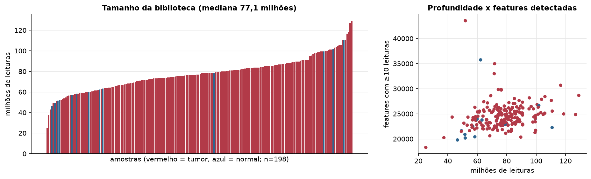
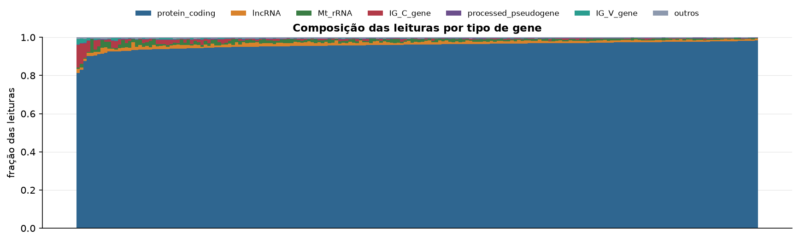
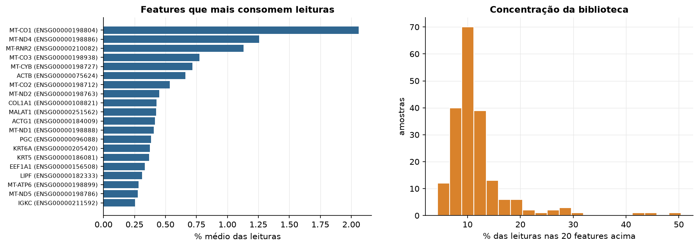
Sobredispersão e zeros
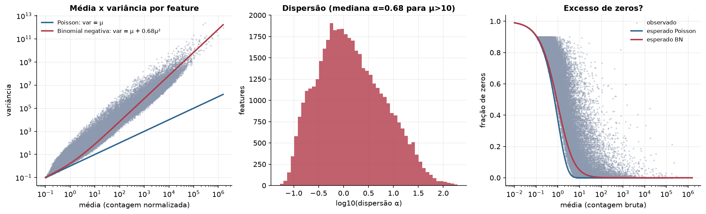
Exploração em log2(CPM+1)
Features com CPM ≥ 1 em pelo menos 20% das amostras (18.143 features).
Distribuição dos valores
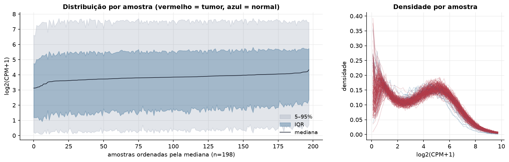
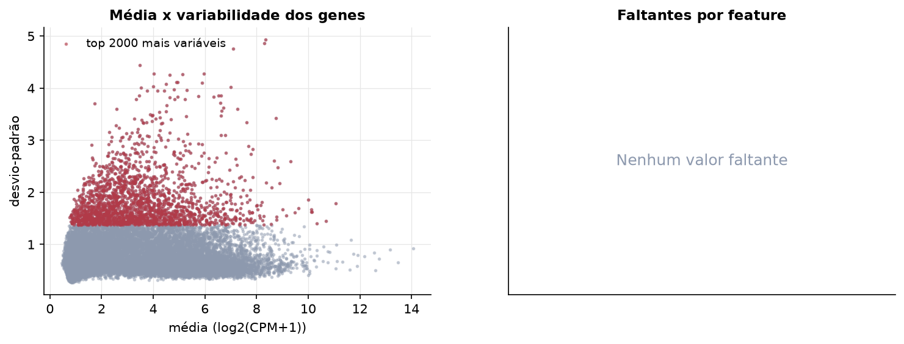
Estrutura das amostras
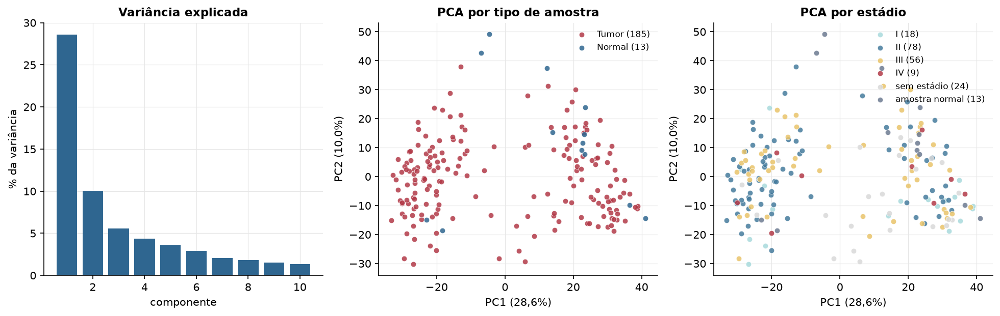
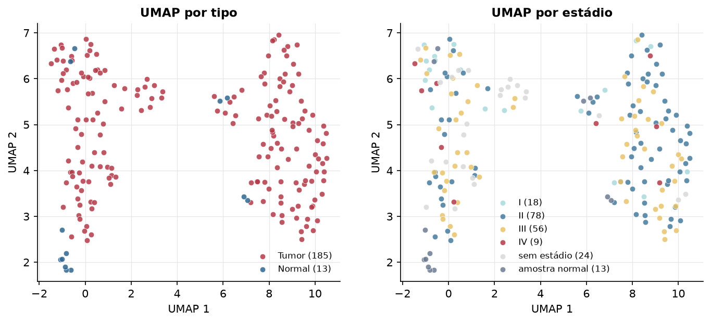
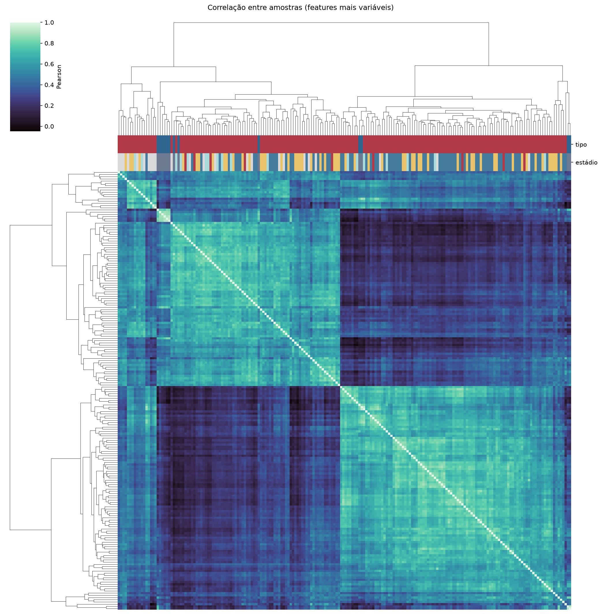
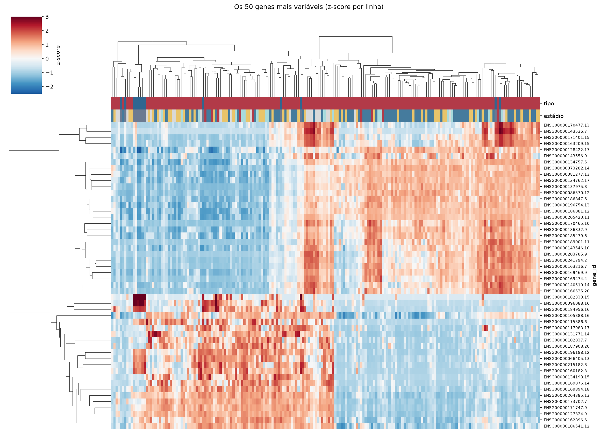
Tumor x normal
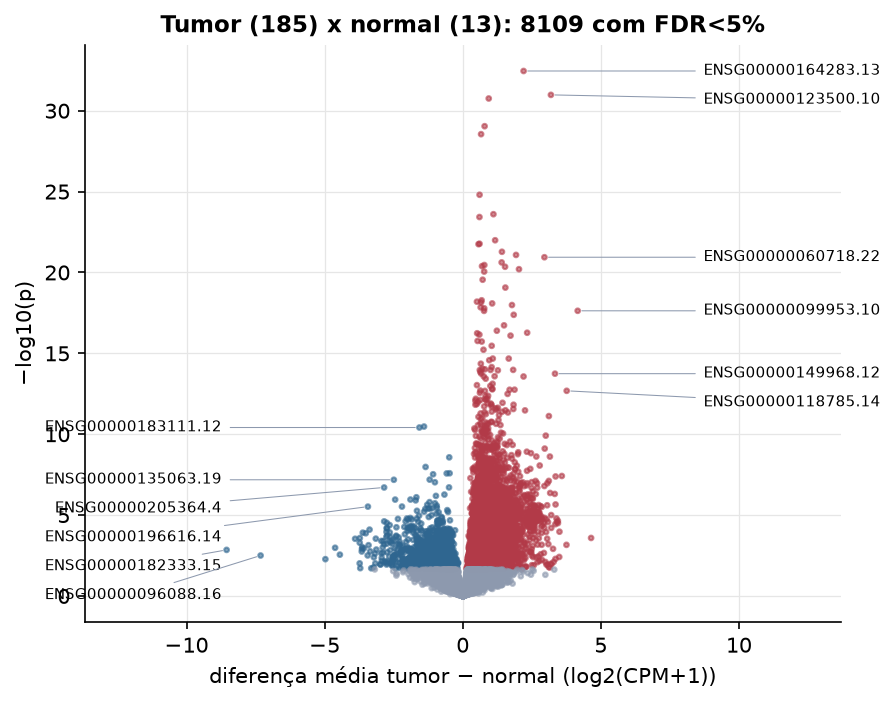
Features mais diferentes entre tumor e normal
| gene_id | diferenca_tumor_menos_normal | t | p | fdr |
|---|---|---|---|---|
| ENSG00000164283.13 | 2.203 | 19.455 | 3.5e-33 | 6.35e-29 |
| ENSG00000123500.10 | 3.193 | 16.521 | 1.05e-31 | 9.5e-28 |
| ENSG00000257636.6 | 0.942 | 14.072 | 1.75e-31 | 1.06e-27 |
| ENSG00000198443.6 | 0.792 | 13.625 | 9.06e-30 | 4.11e-26 |
| ENSG00000261327.5 | 0.664 | 13.33 | 2.82e-29 | 1.02e-25 |
| ENSG00000174015.10 | 0.61 | 12.437 | 1.57e-25 | 4.76e-22 |
| ENSG00000286058.1 | 1.111 | 11.745 | 2.49e-24 | 6.47e-21 |
| ENSG00000248268.1 | 0.605 | 11.656 | 3.73e-24 | 8.47e-21 |
| ENSG00000162892.16 | 1.173 | 11.619 | 1.02e-22 | 2.05e-19 |
| ENSG00000272666.1 | 0.609 | 11.288 | 1.68e-22 | 2.93e-19 |
| ENSG00000184260.6 | 0.571 | 15.533 | 1.78e-22 | 2.93e-19 |
| ENSG00000253706.5 | 1.419 | 11.152 | 5.25e-22 | 7.94e-19 |
| ENSG00000197172.10 | 1.929 | 10.869 | 8.22e-22 | 1.15e-18 |
| ENSG00000060718.22 | 2.957 | 13.047 | 1.14e-21 | 1.48e-18 |
| ENSG00000111981.5 | 1.409 | 14.386 | 2.38e-21 | 2.88e-18 |
| ENSG00000164651.17 | 0.783 | 10.662 | 3.47e-21 | 3.93e-18 |
| ENSG00000164400.6 | 0.698 | 10.649 | 4.07e-21 | 4.34e-18 |
| ENSG00000095752.7 | 1.532 | 13.997 | 4.43e-21 | 4.47e-18 |
| ENSG00000221867.9 | 2.036 | 10.562 | 6.26e-21 | 5.98e-18 |
| ENSG00000254349.6 | 0.776 | 12.033 | 8.78e-21 | 7.96e-18 |
| ENSG00000226363.3 | 0.721 | 11.06 | 2.8e-20 | 2.42e-17 |
| ENSG00000225548.7 | 1.543 | 11.852 | 8.57e-20 | 7.07e-17 |
| ENSG00000231240.1 | 0.685 | 9.995 | 5.24e-19 | 4.13e-16 |
| ENSG00000287407.1 | 0.514 | 9.896 | 6.38e-19 | 4.83e-16 |
| ENSG00000230838.1 | 0.664 | 10.028 | 7.02e-19 | 5.1e-16 |
| ENSG00000168298.7 | 1.065 | 14.549 | 8.17e-19 | 5.7e-16 |
| ENSG00000163923.10 | 1.782 | 13.393 | 1.03e-18 | 6.92e-16 |
| ENSG00000287394.1 | 0.648 | 9.783 | 1.42e-18 | 9.19e-16 |
| ENSG00000268916.6 | 0.778 | 9.78 | 1.64e-18 | 1.03e-15 |
| ENSG00000099953.10 | 4.162 | 17.858 | 2.34e-18 | 1.38e-15 |
Associação com variáveis clínicas
p-valores da associação dos três primeiros componentes principais (só tumores) com estádio (Kruskal-Wallis), sexo (Mann-Whitney), idade (Spearman) e sobrevida global (Cox univariado).
| estádio (Kruskal) | sexo (Mann-Whitney) | idade (Spearman) | sobrevida OS (Cox) | |
|---|---|---|---|---|
| PC1 (29,3%) | 0.008 | 0.92 | 3.28e-06 | 0.854 |
| PC2 (9,5%) | 0.003 | 0.686 | 0.816 | 0.932 |
| PC3 (5,7%) | 0.79 | 0.285 | 0.051 | 0.784 |